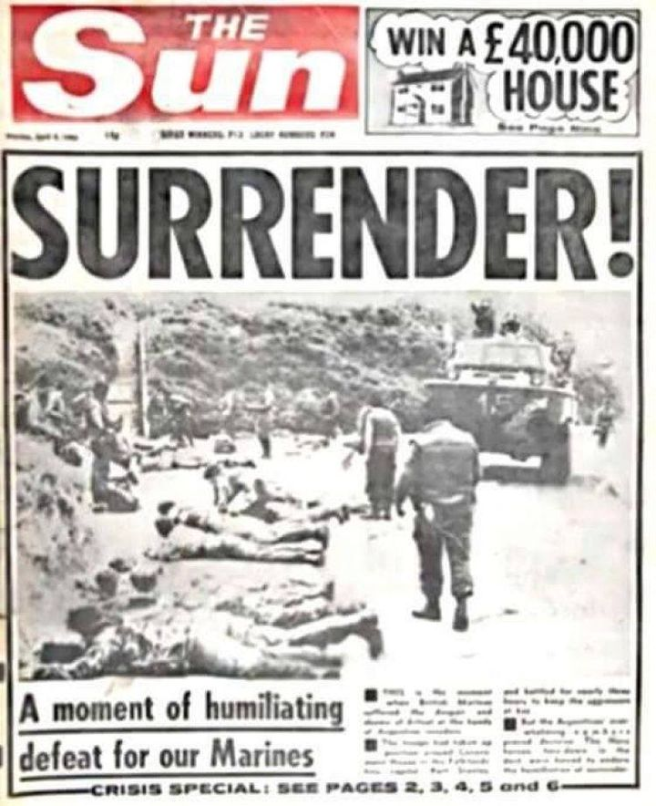
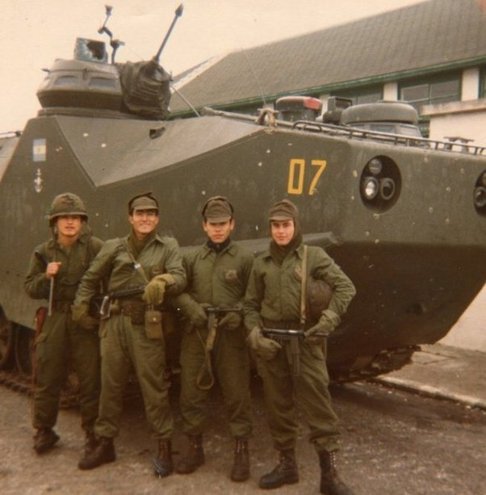
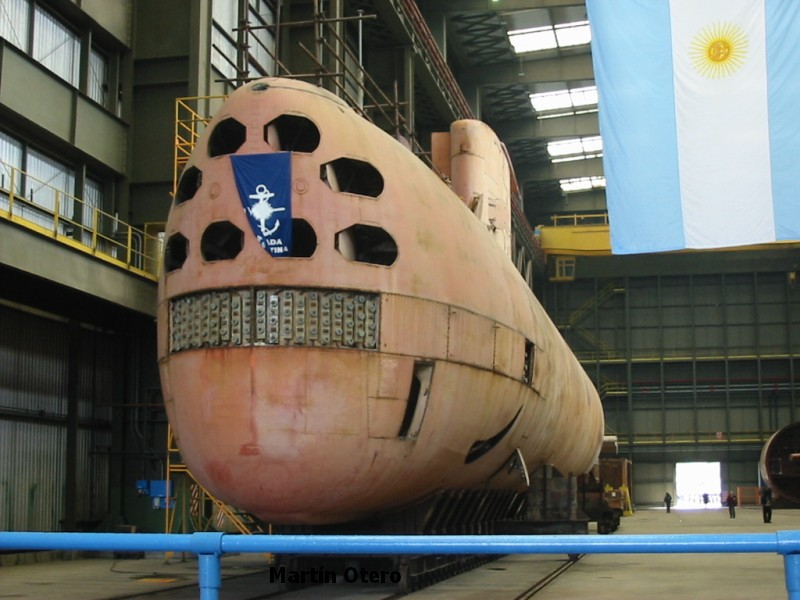
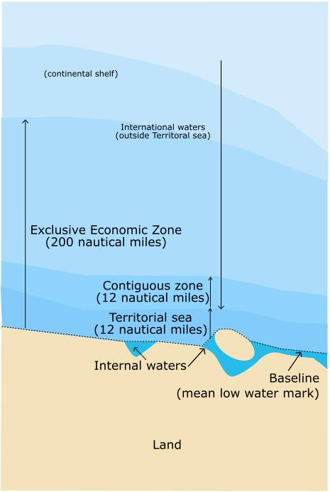

포클랜드 전쟁 잡담 - 외로운 잠수함의 모험
게시: 2022-05-05T06:30:55+09:00
<영국 해병대의 굴욕> 1982년 4월 2일 새벽, 500여명의 아르헨티나군이 포클랜드에 기습상륙하면서 시작된 포클랜드 전쟁에서 첫 희생자는 영국군이었을까 아르헨티나군이었을까? 흔히 짧은 저항 뒤에 영국 해병대가 항복했다고 알려졌으나 실제로는 꽤 격렬한 전투가 있었음. 아르헨티나군은 잠자는 영국 해병들을 덮치기 위해 깜깜한 밤중에 Moody Brook 병영의 침실들에 수류탄을 집어던지며 공격을 시작. 폭발과 총격이 난무했지만 무디 브룩 병영은 모두 빈 방. 이미 아르헨티나군의 상륙을 알아챈 57명의 영국 해병대와 11명의 해군 지도제작병들은 지사 공관으로 몰려가 거기서 방어선을 구축. 거기서도 맹렬한 총격전이 벌어졌고, Amtrack 장갑차를 향해 로켓포와 구스타프 무반동총도 발사됨. 아르헨티나군의 Amtrack 장갑차 1대를 파괴했네 못했네에 대해서는 아직도 왈가왈부 말이 많은데, 아무튼 영국 해병대는 1대의 장갑차를 격파했다고 주장. 뿐만 아니라 영국 해병 보고서는 5명의 아르헨티나군을 사살하고 17명 부상시킨 뒤 3명의 포로까지 잡았다고 주장. 그러나 결국 숫적으로 중과부적인데다 장갑차들도 나타난 마당에 더 이상의 저항이 무의미하다고 판단한 포클랜드 지사 Sir Rex Hunt가 '사격중지'를 명령. 나중에 헌트 지사는 '해병대의 사전에는 surrender라는 단어가 없기 때문에 일부러 항복이라는 단어를 쓰지 않고 ceasefire라고 말했다'라고 회고.

결국 영국 해병대는 한명의 사상자도 내지 않고 항복했고, The Sun지에 보도된 저 굴욕적인 자세를 연출 (위 사진1). 그러나 저 사진이 촬영된 직후 아르헨티나 장교는 저렇게 해병들을 엎드리게 만든 아르헨티나 병사를 질책하고 영국군에게 일어나라고 한 뒤 스스로를 자랑스럽게 여기라고 훈훈하게 덕담. 이들은 헌트 지사 및 그 가족들과 함께 아르헨티나로 후송된 뒤 거기서 영국으로 송환됨. 이때 후송되던 영국 해병대원 중 하나가 이렇게 말했다고 주장됨. "Don’t make yourself too comfy mate, we’ll be back." (너무 편하게 있지마. 곧 돌아올게.) 한편, 아르헨티나 측은 '영국군이 쏜 대전차 로켓은 모조리 빗나갔다'라고 주장. 사진2가 아르헨티나 측이 그 증거로 제시한 점령 직후의 기념 사진. 공식적으로는 아르헨티나 측 피해는 1명의 사망자와 3명의 부상자가 발생.

<외로운 잠수함의 모험> 포클랜드 전쟁 당시, 아르헨티나는 2척의 잠수함을 보유. 1척인 ARA Santa Fe (S-21, 잠수 기준 2400톤 8노트)는 원래 1945년 취역한 미해군 잠수함 USS Catfish를 넘겨받은 것. 나이 값을 하는지 전쟁 초기인 4월 28일 영국해군 헬리콥터에게 다구리를 맞고 나포됨. 나머지 1척인 ARA San Luis (S-32)는 1973년 건조된 Type-209급 잠수함으로서, 당시로서는 꽤 최신형 독일제 잠수함. 이 1척 때문에 영국해군은 노심초사 잠수함 공포증에 걸림. 이 잠수함이 영국해군에게 어뢰를 쏜 것은 2번. 한번은 포클랜드 연안을 빠져나가는 두 척의 프리깃함 HMS Brilliant와 HMS Yarmouth에게, 다른 한번은 역시 프리깃함들인 HMS Alacrity와 HMS Arrow에게 쏨. 문제는 독일제 유도어뢰인 SST-4가 다 빗나갔다는 것. 브릴리언트와 야머쓰에게 쏜 것은 유도가 잘못 되었는지 엉뚱한 곳으로 가버렸고, 얼래크리티와 애로우에게 쏜 2발 중 1발은 아예 발사관에서 막히고 나머지 1발은 잘 날아갔으나 애로우의 예인 디코이에 끌려 그걸 때림. 어뢰 공격을 탐지한 영국 해군은 두번 모두 헬기와 프리깃함들이 각각 20시간 넘게 죽어라 폭뢰와 어뢰를 쏘아대며 사냥에 나섬. 잠수함 잡는데 쓰라고 미해군이 특별히 찔러준 200발의 Mk 46 유도어뢰 중 무려 50발을 호날두 슈팅 난사하듯 쏘아댈 정도로 잠수함 사냥에 진심이었음. 그러나 두 번 모두 헛수고. 애초에 산루이스의 위치를 파악하지 못했기 때문. 전쟁이 끝날 때까지 영국 해군은 단 한번도 산루이스의 위치를 포착하지 못했음. 결국 산루이스는 아무 것도 격침시키지는 못했으나, 영국해군 대잠헬기 Sea King 2대를 전과로 삼을 수는 있었음. 산루이스를 잡겠다고 대잠 초계 비행을 하던 시킹 헬기 중 2대가 사고로 추락했기 때문. 전후에 독일 제조사에서 엔지니어들이 나와 '왜 SST-4 어뢰가 다 빗나갔는지' 조사 후 내린 결론은 아르헨티나 정비병들이 정비 활동 후 전기 배선의 플러스 마이너스를 바꿔 끼우는 바람에 관성제어에 사용되는 자이로(gyroscope)가 거꾸로 움직였다는 것. 다소 납득이 가지 않는 설명이지만 진실은 저 너머에.

<영해란 무엇인가?> 많은 이들이 오해하는 것이 대양해군이라는 개념. 원래 해군이라는 개념 자체가 '영해를 지키기 위해 배를 탄 군대'가 아님. 원래 영해라는 개념은 근세 이전까지 전혀 존재하지 않았던 것이며 기본적으로 바다는 모두에게 자유롭게 출입이 가능한 곳. 그러다 '범죄인이 낚시배 타고 부두를 한발짝만 벗어나도 치외법권이라는 말이냐?'라는 의문이 들면서 영해라는 개념이 최초로 생겨난 것이 대략 17세기였으며 그것도 어디까지나 사법권의 행사 때문에 나타난 것. 그때까지는 영해가 해안에서 몇m 떨어진 곳까지 영해인가라는 개념이 없었음. 그러다 영해의 실질적인 범위를 정해준 것은 다름아닌 대포. '해안포의 사정거리가 곧 영해'라는 개념이 18세기에 들어온 것. 당시로서는 대략 3해리 (5.5km). 그게 거의 관습적으로 받아들여진 것이 1793년 미국 정부가 해안에서 3마일 (4.8km) 밖을 중립지역으로 정한 것. 나폴레옹 전쟁 기간 중 미국 상선이 유럽 곳곳에서 활약하고 또 미국과 영국이 전쟁을 벌이면서 그 규칙이 유럽에게도 알려지면서 어느 정도 받아들여졌으나 그 어느 정부도 그 규칙을 법적으로 받아들이지는 않았음. 대포 사정거리가 곧 영해라는 소리를 하면 곧 나올 빈정거림이 '장거리포를 가진 국가는 그러면 영해가 더 넓고 대포가 없는 나라는 영해가 없다는 소리냐?'인데 놀랍게도 그게 사실. 1980년대 이전까지, 그러니까 WW2를 겪고 나서도 어떤 나라는 3해리를 영해로 주장하고 어떤 나라는 12해리를 영해로 주장했는데, 이유는 해군력이 강한 나라와 그렇지 못한 나라의 이해가 상충했기 때문. 1970년대까지는 12해리를 영해로 인정하는 것이 세계적인 추세였지만, 그 역시 일방적인 주장일 뿐 전세계적인 동의는 없었음.

그러다 영해를 12해리 (22km)로 비로소 명문으로 규정한 것이 '1982년 UN 해양업 회의'. 근데 여기서도 영해라고 해도 외국 민간선박은 물론 외국 군함도 항행의 자유를 가짐. 그러니까 러시아 순양함이 일본 영해 내를 마음대로 항행할 자유를 가진다는 소리. 다만, 그러려면 '순수한 의도'로 항해를 해야 하는데, 그러자면 '그 국가의 평화의 질서, 안보에 위협이 되지 않아야 한다'라고 규정이 됨. 다시 말하면 일본이 위협을 느낀다고 판단하면 불법적인 항행이 되는 거임. 구체적으로는 무기를 사용한 훈련을 하거나, 항공기를 띄우거나, 드론이든 상륙정이든 아무튼 군사 장비를 출격시키거나, 측량을 하거나 하면 모두 적대행위로 받아들임.